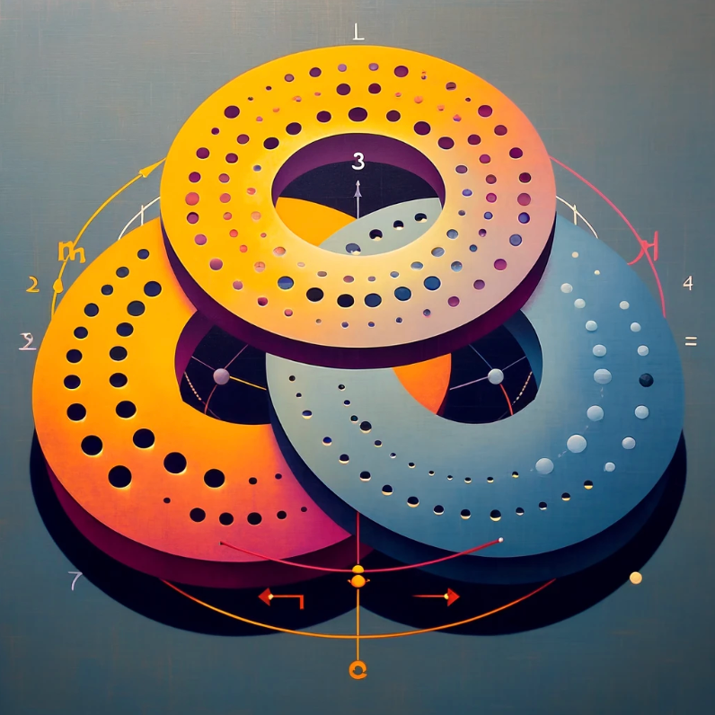

What is a Set, a Group, a Ring, and a Field?
Exploring Fundamental Abstract Algebra

Set
A set is a collection of distinct objects, considered as an object in its own right. These objects are called the elements or members of the set.
More on sets - Wolfram MathWorld
Group
A group is a set equipped with an operation that combines any two elements to form a third element (which also must belong to the set) in such a way that it is:
- Associative
- Has an identity element
- Every element has an inverse with repect to a given operation
More on groups - Wolfram MathWorld
Associative Property
An operation is "associative" if changing the grouping of the operands does not change the result. If the operation is denoted by *, then for any elements a, b, c:
$$ (a \ast b) \ast c = a \ast (b \ast c) $$
always holds.
Identity Element
An identity element is an element in a set that, when combined with any other element of the set through a specific binary operation, leaves the other element unchanged.
For a binary operation * defined on a set S , an element e \in S is an identity element if, for every element a \in S :
$$ e_a = a \quad \text{and} \quad a_e = a $$
Common examples include:
- 0 for addition
- 1 for multiplication
Inverse Element
An inverse under a particular binary operation is an element that, when combined with another element, results in the identity element.
For an operation * defined on a set, if e is the identity element, then for any element a in the set, an element b (often denoted as a^{-1} ) is called the inverse of a if:
$$ a \ast b = e \quad \text{and} \quad b \ast a = e $$
Common examples:
- Additive inverse: a + (-a) = 0
- Multiplicative inverse: a \times a^{-1} = 1
Abelian Group
An abelian group is a group in which the group operation is also commutative (as well as associative). "Commutative" means that the order in which two elements are combined does not affect the result: $$ a \ast b = b \ast a $$
More on abelian groups - Wolfram MathWorld
Commutative Property
An operation is commutative if: $$ a \ast b = b \ast a $$
for all elements a, b in the set.
Ring
A ring is a set equipped with two binary operations (usually referred to as addition and multiplication) where:
- Addition forms a group
- Multiplication is associative
- The distributive property holds over addition
More on rings - Wolfram MathWorld
Key Properties of a Ring
For all a, b, c \in R :
- Closure under addition and multiplication: a + b \in R and a \times b \in R
- Associativity of addition and multiplication: (a + b) + c = a + (b + c), \quad (a \times b) \times c = a \times (b \times c)
- Commutativity of addition: a + b = b + a
- Existence of an additive identity: There exists 0 \in R such that a + 0 = a
- Existence of additive inverses: For every a \in R , there exists -a \in R such that a + (-a) = 0
- Distributive laws: a \times (b + c) = a \times b + a \times c
Optional Properties:
- Multiplicative identity: In some definitions, particularly for rings that are also termed unital or unitary, there exists an element 1 \in R (distinct from 0) such that a \ast 1 = a and 1 \ast a = 1 for all a \in R
- Commutativity of multiplication: In a commutative ring, for all a, b \in R , a \ast b = b \ast a . However, this property is not required for a set to be a ring. Without this property, the set is called a "non-commutative ring" If satisfied, the ring is called a "commutative ring".
Field
A field is a set equipped with two binary operations (addition and multiplication) that satisfy:
- Closure: a + b \in F , a \times b \in F (Wolfram MathWorld)
- Associativity: (a + b) + c = a + (b + c) and (a \times b) \times c = a \times (b \times c) (Wolfram MathWorld)
- Commutativity: a + b = b + a and a \times b = b \times a (Wolfram MathWorld)
- Identity Elements:
- TODO: fix the indentation here...
- There exists 0 such that a + 0 = a
- There exists 1 such that a \times 1 = a
- (Wolfram MathWorld
- Additive Inverses: For every a , there exists -a such that a + (-a) = 0 (Wolfram MathWorld)
- Multiplicative Inverses: For every nonzero a , there exists a^{-1} such that: a \times a^{-1} = 1 (Wolfram MathWorld)
- Distributivity: a \times (b + c) = (a \times b) + (a \times c) (Wolfram MathWorld)
More on fields - Wolfram MathWorld
Relationship to Rings
A field is a ring in which:
- Every nonzero element has a multiplicative inverse.
- Multiplication is commutative.
Abstract Algebra
Abstract algebra is a branch of mathematics that studies algebraic structures such as groups, rings, and fields. These structures form the backbone of various mathematical disciplines, including:
- Number Theory
- Topology
- Algebraic Geometry
Abstract algebra explores deep relationships between these structures using axioms such as associativity, commutativity, and inverses. This field is fundamental to both theoretical and applied mathematics, particularly in solving polynomial equations, understanding symmetry, and developing modern cryptographic systems.